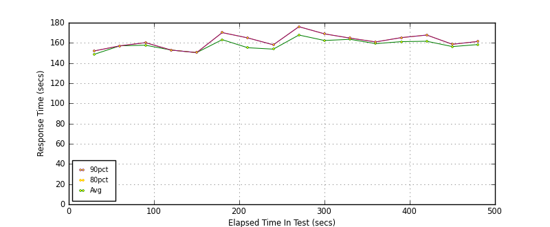
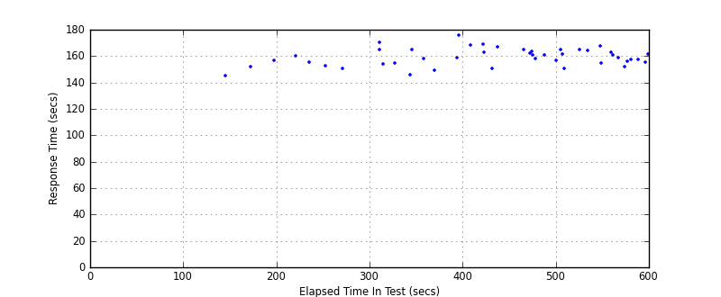
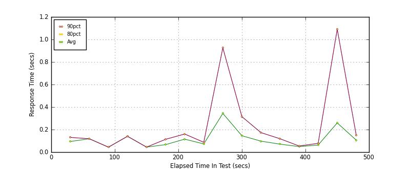
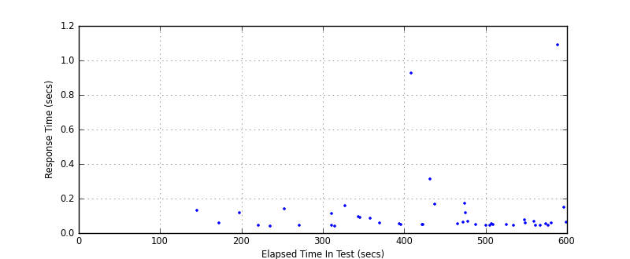
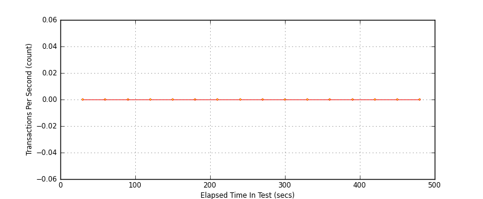
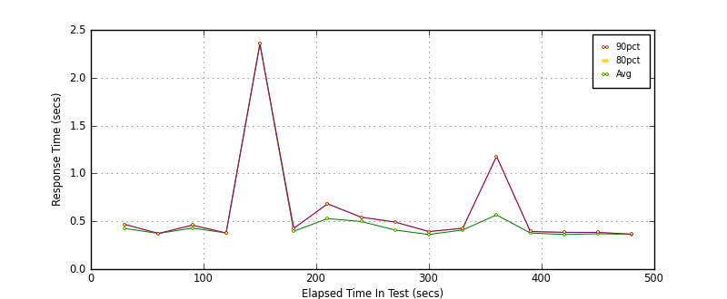
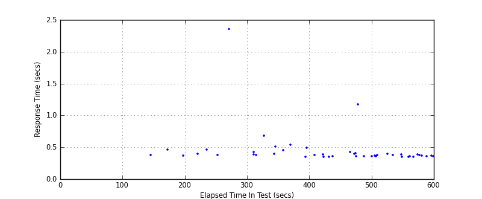
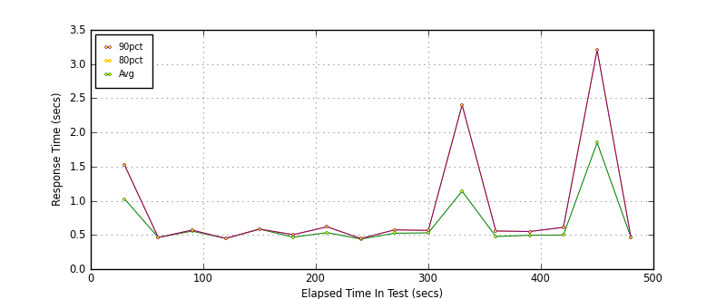
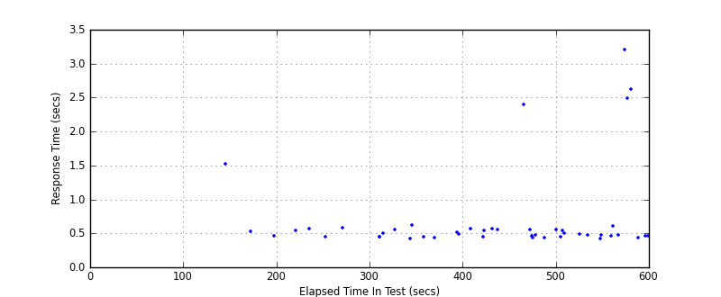

Performance Results Report
Summary
transactions: 75
errors: 0
run time: 600 secs
rampup: 600 secs
test start: 2012-02-28 13:08:28
test finish: 2012-02-28 13:16:01
time-series interval: 30 secs
workload configuration:
| group name | threads | script name |
|---|
| user_group-1 | 30 | mech_chat.py |
All Transactions
Transaction Response Summary (secs)
| count | min | avg | 80pct | 90pct | 95pct | max | stdev |
|---|
| 75 | 145.345 | 159.271 | 164.977 | 167.767 | 168.938 | 176.047 | 6.631 |
Interval Details (secs)
| interval | count | rate | min | avg | 80pct | 90pct | 95pct | max | stdev |
|---|
| 1 | 2 | 0.07 | 145.345 | 148.692 | 152.038 | 152.038 | 152.038 | 152.038 | 4.733 |
| 2 | 1 | 0.03 | 157.083 | 157.083 | 157.083 | 157.083 | 157.083 | 157.083 | 0.000 |
| 3 | 2 | 0.07 | 155.171 | 157.705 | 160.238 | 160.238 | 160.238 | 160.238 | 3.583 |
| 4 | 1 | 0.03 | 152.900 | 152.900 | 152.900 | 152.900 | 152.900 | 152.900 | 0.000 |
| 5 | 1 | 0.03 | 150.344 | 150.344 | 150.344 | 150.344 | 150.344 | 150.344 | 0.000 |
| 6 | 3 | 0.10 | 154.363 | 163.195 | 170.181 | 170.181 | 170.181 | 170.181 | 8.069 |
| 7 | 3 | 0.10 | 146.001 | 155.194 | 164.931 | 164.931 | 164.931 | 164.931 | 9.477 |
| 8 | 2 | 0.07 | 149.511 | 153.804 | 158.097 | 158.097 | 158.097 | 158.097 | 6.071 |
| 9 | 3 | 0.10 | 159.013 | 167.792 | 176.047 | 176.047 | 176.047 | 176.047 | 8.529 |
| 10 | 4 | 0.13 | 150.956 | 162.364 | 168.938 | 168.938 | 168.938 | 168.938 | 8.042 |
| 11 | 3 | 0.10 | 161.966 | 163.538 | 164.729 | 164.729 | 164.729 | 164.729 | 1.420 |
| 12 | 4 | 0.13 | 156.924 | 159.225 | 160.942 | 160.942 | 160.942 | 160.942 | 2.009 |
| 13 | 5 | 0.17 | 150.399 | 161.237 | 165.207 | 165.207 | 165.207 | 165.207 | 6.228 |
| 14 | 4 | 0.13 | 154.805 | 161.602 | 167.767 | 167.767 | 167.767 | 167.767 | 5.399 |
| 15 | 5 | 0.17 | 151.730 | 156.335 | 158.619 | 158.619 | 158.619 | 158.619 | 2.710 |
| 16 | 2 | 0.07 | 155.260 | 158.342 | 161.424 | 161.424 | 161.424 | 161.424 | 4.358 |
Graphs
Response Time: 30 sec time-series

Response Time: raw data (all points)

Throughput: 5 sec time-series

Custom Timer: Chat
Timer Summary (secs)
| count | min | avg | 80pct | 90pct | 95pct | max | stdev |
|---|
| 45 | 0.042 | 0.121 | 0.130 | 0.168 | 0.315 | 1.090 | 0.201 |
Interval Details (secs)
| interval | count | rate | min | avg | 80pct | 90pct | 95pct | max | stdev |
|---|
| 1 | 2 | 0.07 | 0.058 | 0.094 | 0.130 | 0.130 | 0.130 | 0.130 | 0.051 |
| 2 | 1 | 0.03 | 0.118 | 0.118 | 0.118 | 0.118 | 0.118 | 0.118 | 0.000 |
| 3 | 2 | 0.07 | 0.042 | 0.043 | 0.044 | 0.044 | 0.044 | 0.044 | 0.001 |
| 4 | 1 | 0.03 | 0.140 | 0.140 | 0.140 | 0.140 | 0.140 | 0.140 | 0.000 |
| 5 | 1 | 0.03 | 0.044 | 0.044 | 0.044 | 0.044 | 0.044 | 0.044 | 0.000 |
| 6 | 3 | 0.10 | 0.042 | 0.066 | 0.114 | 0.114 | 0.114 | 0.114 | 0.041 |
| 7 | 3 | 0.10 | 0.090 | 0.115 | 0.161 | 0.161 | 0.161 | 0.161 | 0.039 |
| 8 | 2 | 0.07 | 0.058 | 0.073 | 0.087 | 0.087 | 0.087 | 0.087 | 0.020 |
| 9 | 3 | 0.10 | 0.049 | 0.343 | 0.926 | 0.926 | 0.926 | 0.926 | 0.504 |
| 10 | 4 | 0.13 | 0.048 | 0.145 | 0.315 | 0.315 | 0.315 | 0.315 | 0.126 |
| 11 | 3 | 0.10 | 0.056 | 0.097 | 0.173 | 0.173 | 0.173 | 0.173 | 0.066 |
| 12 | 4 | 0.13 | 0.044 | 0.070 | 0.118 | 0.118 | 0.118 | 0.118 | 0.034 |
| 13 | 5 | 0.17 | 0.043 | 0.049 | 0.054 | 0.054 | 0.054 | 0.054 | 0.004 |
| 14 | 4 | 0.13 | 0.046 | 0.063 | 0.078 | 0.078 | 0.078 | 0.078 | 0.014 |
| 15 | 5 | 0.17 | 0.043 | 0.259 | 1.090 | 1.090 | 1.090 | 1.090 | 0.465 |
| 16 | 2 | 0.07 | 0.064 | 0.106 | 0.148 | 0.148 | 0.148 | 0.148 | 0.060 |
Graphs
Response Time: 30 sec time-series

Response Time: raw data (all points)

Throughput: 30 sec time-series

Custom Timer: Payment
Timer Summary (secs)
| count | min | avg | 80pct | 90pct | 95pct | max | stdev |
|---|
| 45 | 0.348 | 0.459 | 0.453 | 0.507 | 0.682 | 2.354 | 0.317 |
Interval Details (secs)
| interval | count | rate | min | avg | 80pct | 90pct | 95pct | max | stdev |
|---|
| 1 | 2 | 0.07 | 0.382 | 0.425 | 0.467 | 0.467 | 0.467 | 0.467 | 0.060 |
| 2 | 1 | 0.03 | 0.373 | 0.373 | 0.373 | 0.373 | 0.373 | 0.373 | 0.000 |
| 3 | 2 | 0.07 | 0.398 | 0.429 | 0.459 | 0.459 | 0.459 | 0.459 | 0.043 |
| 4 | 1 | 0.03 | 0.378 | 0.378 | 0.378 | 0.378 | 0.378 | 0.378 | 0.000 |
| 5 | 1 | 0.03 | 2.354 | 2.354 | 2.354 | 2.354 | 2.354 | 2.354 | 0.000 |
| 6 | 3 | 0.10 | 0.376 | 0.396 | 0.425 | 0.425 | 0.425 | 0.425 | 0.026 |
| 7 | 3 | 0.10 | 0.395 | 0.528 | 0.682 | 0.682 | 0.682 | 0.682 | 0.145 |
| 8 | 2 | 0.07 | 0.453 | 0.497 | 0.542 | 0.542 | 0.542 | 0.542 | 0.063 |
| 9 | 3 | 0.10 | 0.352 | 0.408 | 0.492 | 0.492 | 0.492 | 0.492 | 0.074 |
| 10 | 4 | 0.13 | 0.348 | 0.362 | 0.392 | 0.392 | 0.392 | 0.392 | 0.021 |
| 11 | 3 | 0.10 | 0.397 | 0.409 | 0.427 | 0.427 | 0.427 | 0.427 | 0.016 |
| 12 | 4 | 0.13 | 0.361 | 0.566 | 1.178 | 1.178 | 1.178 | 1.178 | 0.408 |
| 13 | 5 | 0.17 | 0.363 | 0.377 | 0.393 | 0.393 | 0.393 | 0.393 | 0.011 |
| 14 | 4 | 0.13 | 0.352 | 0.362 | 0.384 | 0.384 | 0.384 | 0.384 | 0.015 |
| 15 | 5 | 0.17 | 0.350 | 0.369 | 0.384 | 0.384 | 0.384 | 0.384 | 0.014 |
| 16 | 2 | 0.07 | 0.362 | 0.363 | 0.365 | 0.365 | 0.365 | 0.365 | 0.002 |
Graphs
Response Time: 30 sec time-series

Response Time: raw data (all points)

Throughput: 30 sec time-series
Custom Timer: Signup
Timer Summary (secs)
| count | min | avg | 80pct | 90pct | 95pct | max | stdev |
|---|
| 45 | 0.425 | 0.716 | 0.574 | 1.523 | 2.494 | 3.204 | 0.649 |
Interval Details (secs)
| interval | count | rate | min | avg | 80pct | 90pct | 95pct | max | stdev |
|---|
| 1 | 2 | 0.07 | 0.531 | 1.027 | 1.523 | 1.523 | 1.523 | 1.523 | 0.701 |
| 2 | 1 | 0.03 | 0.463 | 0.463 | 0.463 | 0.463 | 0.463 | 0.463 | 0.000 |
| 3 | 2 | 0.07 | 0.541 | 0.556 | 0.571 | 0.571 | 0.571 | 0.571 | 0.021 |
| 4 | 1 | 0.03 | 0.449 | 0.449 | 0.449 | 0.449 | 0.449 | 0.449 | 0.000 |
| 5 | 1 | 0.03 | 0.585 | 0.585 | 0.585 | 0.585 | 0.585 | 0.585 | 0.000 |
| 6 | 3 | 0.10 | 0.448 | 0.467 | 0.504 | 0.504 | 0.504 | 0.504 | 0.032 |
| 7 | 3 | 0.10 | 0.425 | 0.533 | 0.619 | 0.619 | 0.619 | 0.619 | 0.099 |
| 8 | 2 | 0.07 | 0.434 | 0.440 | 0.447 | 0.447 | 0.447 | 0.447 | 0.010 |
| 9 | 3 | 0.10 | 0.485 | 0.525 | 0.574 | 0.574 | 0.574 | 0.574 | 0.045 |
| 10 | 4 | 0.13 | 0.452 | 0.530 | 0.566 | 0.566 | 0.566 | 0.566 | 0.052 |
| 11 | 3 | 0.10 | 0.460 | 1.141 | 2.402 | 2.402 | 2.402 | 2.402 | 1.093 |
| 12 | 4 | 0.13 | 0.436 | 0.477 | 0.558 | 0.558 | 0.558 | 0.558 | 0.057 |
| 13 | 5 | 0.17 | 0.453 | 0.495 | 0.550 | 0.550 | 0.550 | 0.550 | 0.036 |
| 14 | 4 | 0.13 | 0.429 | 0.498 | 0.611 | 0.611 | 0.611 | 0.611 | 0.078 |
| 15 | 5 | 0.17 | 0.441 | 1.850 | 3.204 | 3.204 | 3.204 | 3.204 | 1.296 |
| 16 | 2 | 0.07 | 0.461 | 0.465 | 0.469 | 0.469 | 0.469 | 0.469 | 0.006 |
Graphs
Response Time: 30 sec time-series

Response Time: raw data (all points)

Throughput: 30 sec time-series